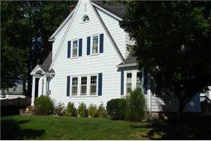
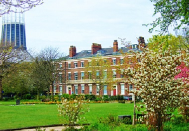

Nick's Past, Present, and Future
My Past

I was born on May 16, 2000 in Washington DC. I lived there for about a year, and then my mom, dad and I moved to Cranston, Rhode Island. I lived in Rhode Island for around ten years and spent most of my childhood there, and it was where my little sister was born. I really loved Rhode Island, but the economic crash in 2008 badly affected the company my dad worked for, so we moved to South Carolina because my uncle moved here and said it was nice. I started fifth grade in South Carolina and everything was so different to me than it was in Rhode Island. I eventually got used to it though.
Past Events
- Learned to play soccer
- Learned to play piano
- At Gillette Stadium, my team got to walk out onto the field and be applauded.
- Went on vacation to England, France, and Germany
- Got my first dog
My Present
 I now live with my mom, dad, sister, and three dogs. I go to J L Mann High School, and I am in the 11th grade. I like playing on my Xbox, and I also play soccer for CESA and J L Mann. I spend a lot of time with family because my uncle and grandma on my mom's side also live in Greenville, so we like to spend time together. I listen to hip hop music a lot, so I am really interested in it. I get pretty good grades in school, but I don't do too much outside of school besides hanging out with friends, playing soccer, or playing videogames.
I now live with my mom, dad, sister, and three dogs. I go to J L Mann High School, and I am in the 11th grade. I like playing on my Xbox, and I also play soccer for CESA and J L Mann. I spend a lot of time with family because my uncle and grandma on my mom's side also live in Greenville, so we like to spend time together. I listen to hip hop music a lot, so I am really interested in it. I get pretty good grades in school, but I don't do too much outside of school besides hanging out with friends, playing soccer, or playing videogames.
My Future

After high school, I hope to college. I'll probably go to an in-state college, but I definitely want to go and study abroad in England at the University of Liverpool. I would hope to possibly get a soccer scholarship to a school, but it's fine if I don't. As a job, I would still want one that is involved with soccer. I would enjoy being a sports agent or to be in some form of management for a team or company. I would to prefer to move somewhere outside of South Carolina and maybe even the U.S. I just want to be able to live comfortably. My dream would to be to work for my favorite soccer club, Liverpool, in some form.
Future Goals
- Work for Liverpool
- Live in another country
- Make one million dollars
- Be known for making an impact
- Go wingsuit base jumping